Creative
Studio
EPO 50 Years
Two concrete film ideas for EPO in Motion: The Relay and The Rehearsal.
Creative
Studio
Concept route
The relay.
One flashmob in five parts.
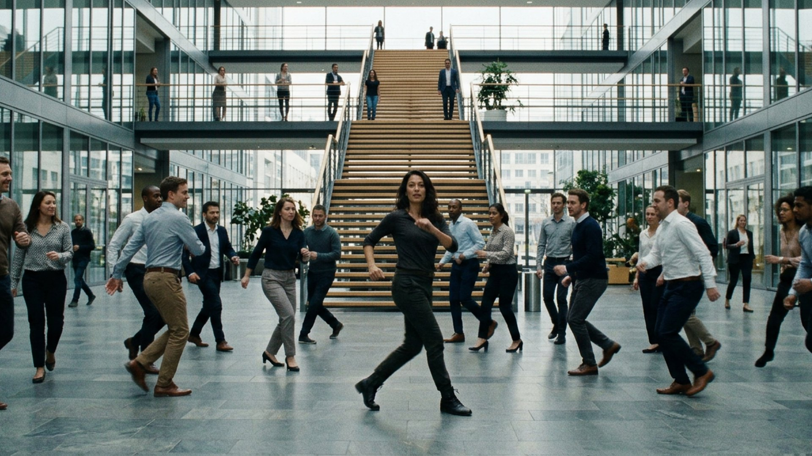
Creative
Studio
Concept route 01
One flashmob in five parts. Every city dances its own piece. Together they become one film.
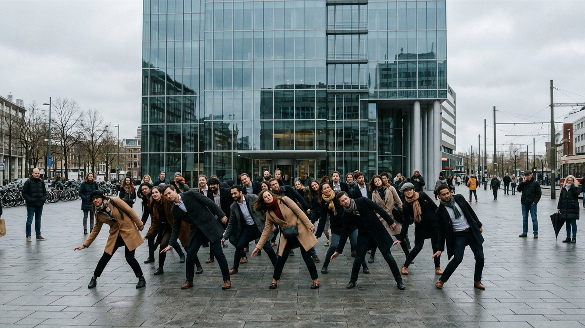
Creative
Studio
Route 1 / The relay
We create one flashmob and split it into five parts, one for each EPO location. Each city learns its own part. A small team films every part on location, and in the edit the five pieces join into one continuous choreography.
Choreographed in advance
We design the whole choreography first and cut it into five parts that fit together seamlessly.
Learned at home
Each city rehearses its part with tutorial videos and online sessions before we arrive.
One day per city
A 2 to 3 person team travels to each location and films the flashmob in a single day.
Edited into one
The five parts become one film. Every city also gets its own flashmob clip.
Creative
Studio
Route 1 / How it works
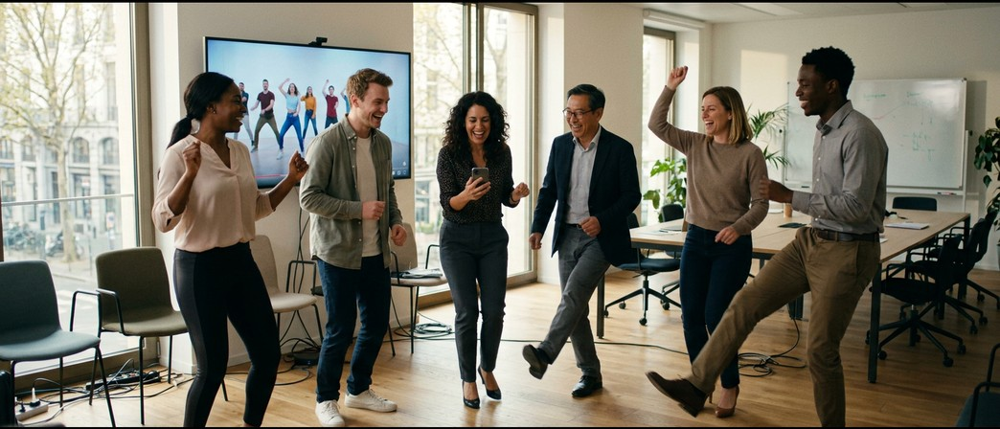
Before the shoot: colleagues learn their part with a tutorial video
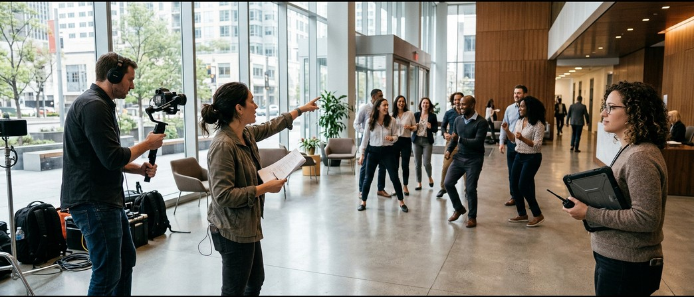
On the day: a small team films the flashmob on location
01
Choreography
Our choreographer creates one flashmob and splits it into five parts.
02
Tutorials
Each city gets a tutorial video for its part, plus online rehearsals with the choreographer.
03
Shoot
A 2 to 3 person team films each city in one day. Up to 20 employees per flashmob.
04
Edit
One film of 2 to 3 minutes, plus a flashmob clip for every location.
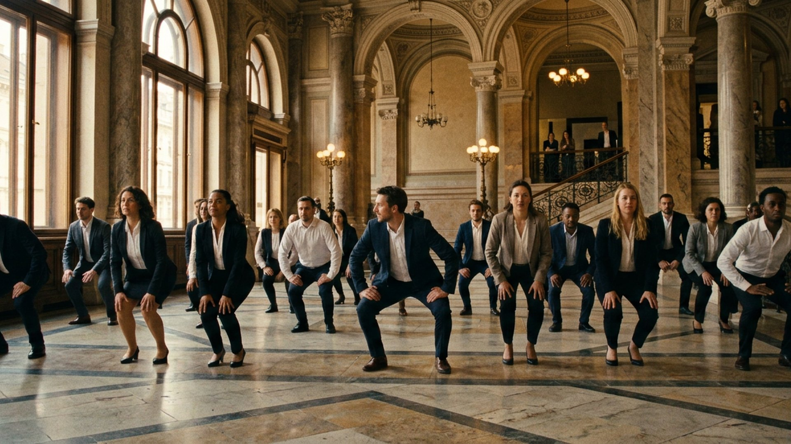
Creative
Studio
Route 1 / Storyboard 1 of 2
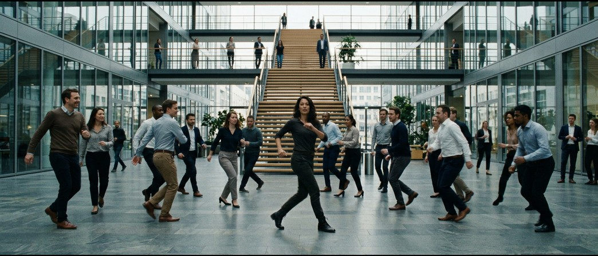
01
Munich · 0:00
Part 1: It begins
One colleague starts the move in the atrium. Around her, the flashmob comes to life.
Group scene · 20 people
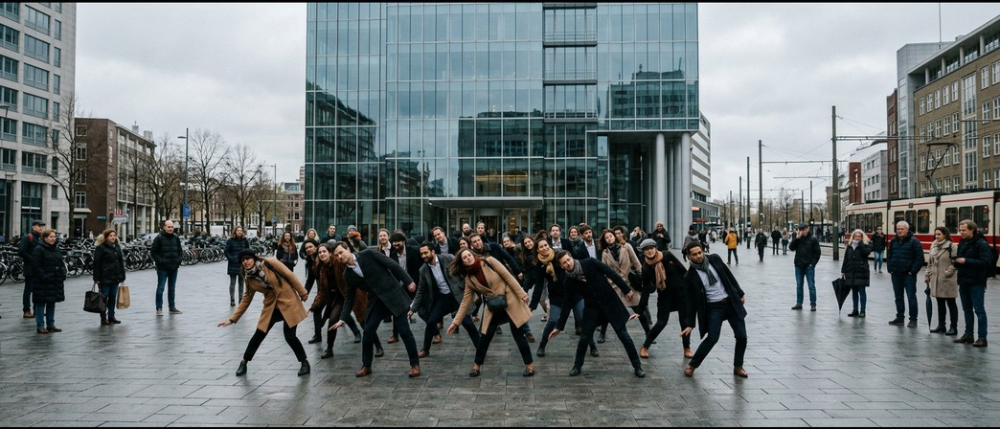
02
The Hague · 0:25
Part 2: The plaza
The movement continues outside, on the plaza in front of the tower. Passers-by stop and watch.
Group scene · 20 people
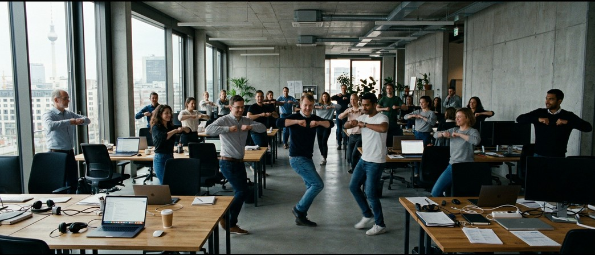
03
Berlin · 0:50
Part 3: Between the desks
Chairs are pushed back. The open-plan office turns into a dance floor.
Group scene · 18 people
Creative
Studio
Route 1 / Storyboard 2 of 2
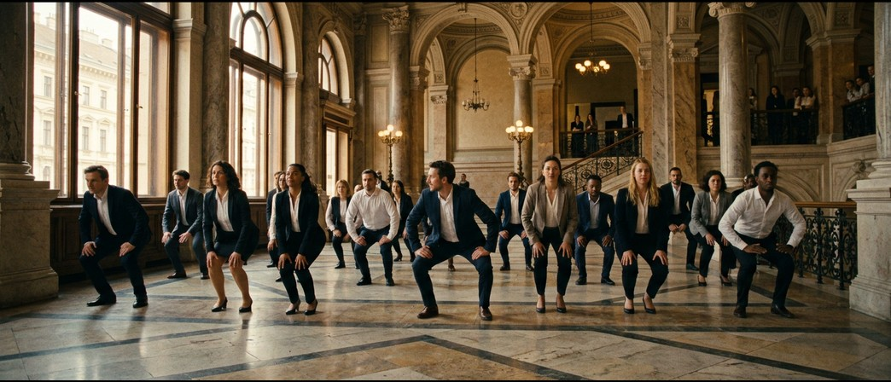
04
Vienna · 1:15
Part 4: The hall
Under high arched windows, the flashmob moves in a canon, row by row.
Group scene · 20 people
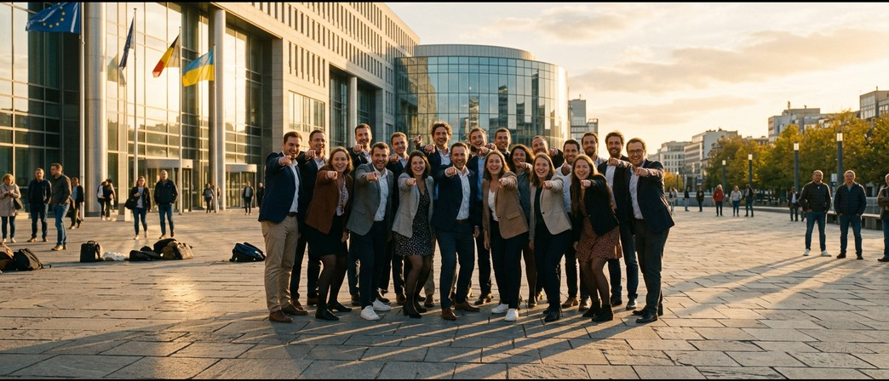
05
Brussels · 1:40
Part 5: The finale
The last part ends in one shared pose, pointing straight at the viewer.
Group scene · 20 people
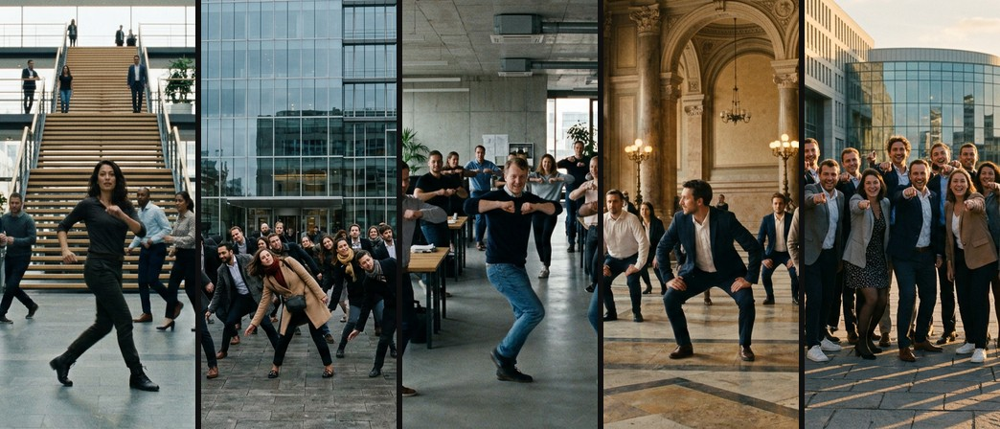
06
All five cities · 2:05
One flashmob
The five parts side by side. One choreography, danced across Europe.
Split screen · 5 locations
Creative
Studio
Concept route
The rehearsal.
One video call. One location. Everyone joins.
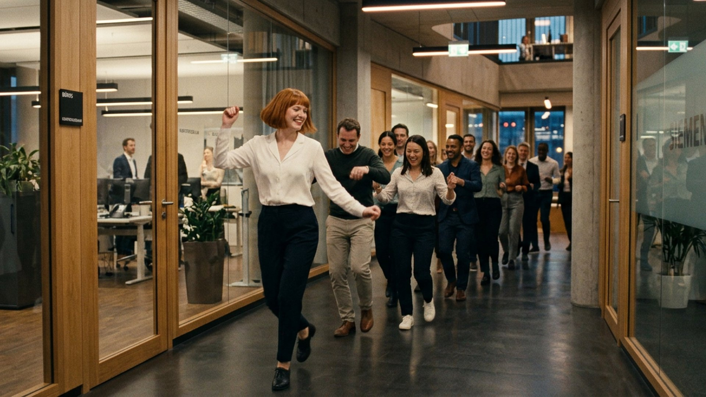
Creative
Studio
Concept route 02
It starts as a video call. It ends with all of Munich dancing, and the other cities joining in.
Creative
Studio
Route 2 / The rehearsal
Five colleagues meet for their weekly call, and only Peter remembers that today is the rehearsal for the anniversary shoot. The call sets up the story, the dance happens at the Munich headquarters, and the other cities join in with their own phone clips.
One call, five cities
The story is framed by a video call. We film the other cities remotely or with a small team.
All dancing in Munich
Every dance scene is shot at the Munich headquarters, with one full crew.
Phone clips from everywhere
Colleagues in the other cities film themselves joining in, on their own phones.
Short and simple
Four scenes and only a few lines. No one has to act beyond the call.
Creative
Studio
Route 2 / Storyboard 1 of 2
01
Five cities · 0:00
The call
Five windows on one screen. Sylvia starts the meeting, Peter can barely keep a straight face.
Split screen · filmed remotely
02
Brussels · 0:30
Today?!
Peter unmutes. Music blasts. Behind him, colleagues are already rehearsing.
1 person + small group
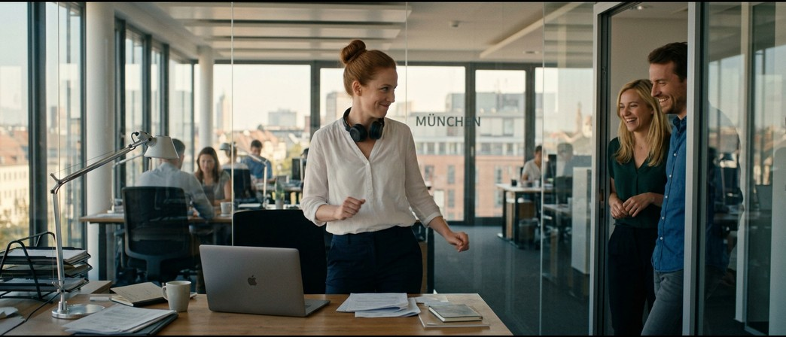
03
Munich · 0:50
Just one move
Sylvia hesitates, then stands up and tries the first step. Two colleagues watch from the door.
1 to 3 people
Creative
Studio
Route 2 / Storyboard 2 of 2
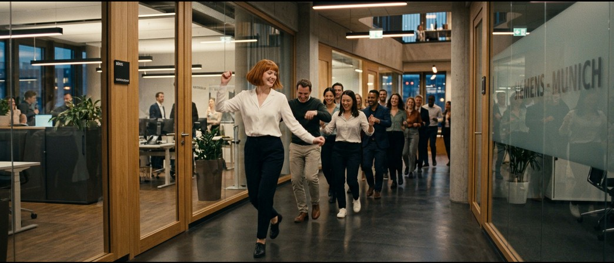
04
Munich · 1:10
It spreads
Down the corridor, more and more colleagues step out and follow her towards the atrium.
Group scene · up to 20 people
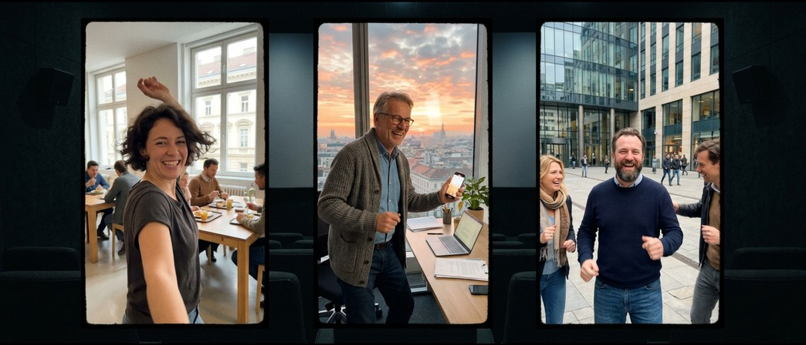
05
Four cities · 1:40
Everyone joins in
Phone clips from Vienna, The Hague, Brussels and Berlin cut in with the dance in Munich.
Phone clips · 4 locations
06
Five cities · 2:30
Same time tomorrow?
Back in the call, out of breath. Tomorrow is the actual shoot. Ariane reaches for mute.
Split screen · filmed remotely
Creative
Studio
Route 2 / Script
Shortened version, about 3 minutes
Page 1 of 3
SCENE 01
The call
0:00 to 0:50
Wednesday, 9:00 AM. Five windows pop up on a screen: BETTY in Vienna, ROBERT in The Hague, SYLVIA in Munich, PETER in Brussels, ARIANE in Berlin.
SYLVIA
“Good morning, everyone! Shall we go through the annual plan?”
PETER is grinning, his shoulders moving to a beat nobody else can hear.
ROBERT
“What’s so funny, Peter?”
PETER unmutes. A blast of music fills everyone’s headphones.
PETER (shouting over the music)
“It’s the choreography rehearsal! For the anniversary shoot! Today!”
A beat.
BETTY
“Oh no. That’s today?”
ARIANE
“Nobody told me there would be dancing.”
PETER turns his laptop around. Behind him, colleagues are already rehearsing. Not perfectly.
PETER
“Come on, guys. It’s not that hard!”
Creative
Studio
Route 2 / Script
Shortened version, about 3 minutes
Page 2 of 3
SCENE 02
Munich starts moving
0:50 to 1:40
SYLVIA hesitates. Then she stands up and tries the first move.
Two colleagues stop in her doorway. She freezes and pretends to stretch.
Then she gives herself a push and starts again. The colleagues join in. Then the next office. Then the whole corridor.
The camera opens up and follows a growing line of dancing colleagues through the Munich headquarters, all the way to the atrium.
SCENE 03
Everyone joins in
1:40 to 2:30
Phone clips from the other cities cut in: BETTY in the Vienna cafeteria, ROBERT next to his desk in The Hague, PETER’s team in front of the Brussels building, ARIANE and her colleagues in Berlin.
In the Munich atrium, around 20 colleagues dance the final part of the choreography together, while the other cities dance along on their phones.
Five locations. One rhythm.
Creative
Studio
Route 2 / Script
Shortened version, about 3 minutes
Page 3 of 3
SCENE 04
Same time tomorrow?
2:30 to 2:50
Back in the call. Everyone is out of breath and laughing.
ROBERT
“Wow. That was impressive.”
PETER (grinning)
“Same time tomorrow?”
SYLVIA
“Tomorrow?”
PETER
“Well… tomorrow’s the actual shoot.”
ARIANE slowly reaches for the mute button.
CUT TO BLACK. EPO LOGO. 50 YEARS OF MOVING IDEAS FORWARD. TOGETHER.
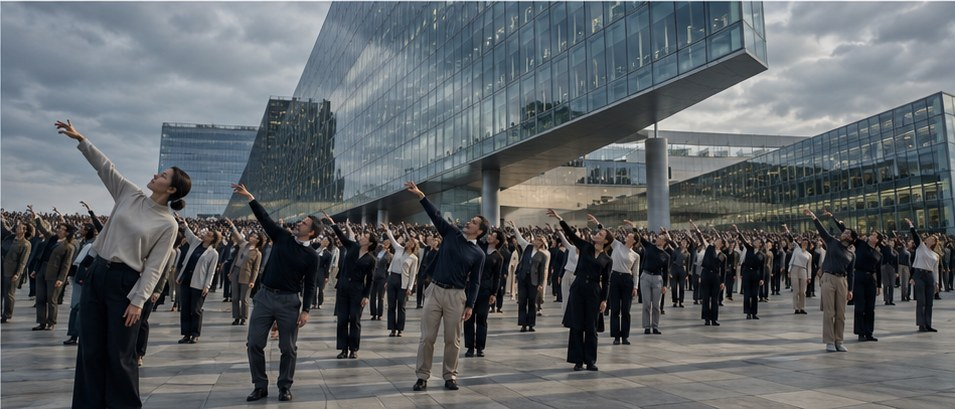
Creative
Studio
Costs
Both routes are planned for around € 69,000 net, for a film of 2 to 3 minutes including intro and outro.
ROUTE 01
Prep
choreography in five parts · tutorial videos · online rehearsals
Shooting
5 locations · 1 day each · 2 to 3 person team
Travel
travel and accommodation for the small team
Post
edit · colour · sound mix · music licence · 5 city clips
ROUTE 02
Prep
shortened script · choreography · online rehearsals
Shooting
1 day at the Munich headquarters with the full crew
Call
video call filmed remotely or with a small team
Post
edit · colour · sound mix · music licence · phone clips from 4 cities
In both routes
Employees only
no professional dancers
Up to 20 people
per group scene
Available light
no lighting setups
AI backup
if shots go wrong or people don’t turn up
Creative
Studio
50 years of people moving ideas forward. Together.
EPO 50 · Since 1977 · A concept by Ivory Creative Studio